Every part of the Rev E hexagon with the thin ribs proposed on 2 November 2026, as 3D models and drawings. Each entry has a model you can turn, four drawing views, the dimensions, the material, the mass from the model, and STEP and GLB downloads. Everything marked PROPOSAL waits on Manos and Marco. The notes behind each part are in the project: "How thin the ribs can go (2 Nov)", "Rib joints (2 Nov)", "Glass access and seam shear (24 Oct)", "Rev E sizing (24 Oct)".
Not here yet: the corner block and its ties (the C1 deck), the mid-seam hardpoints, the pentagon panel, the shutters and the outer glass layers. They follow as their designs settle. The main rib shown is the thin 400 x 100 one (choice B in the 2 Nov correction note); if the project keeps leak before break it becomes 450 x 150 x 25 and the drawing changes.
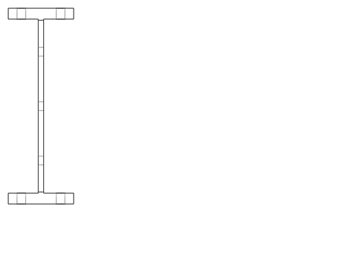
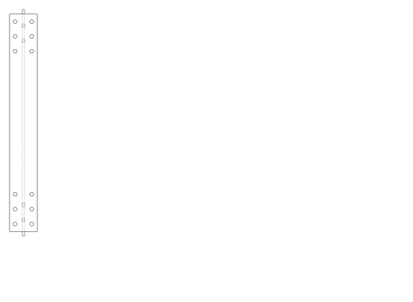
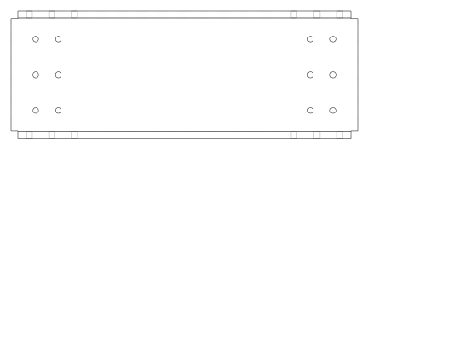
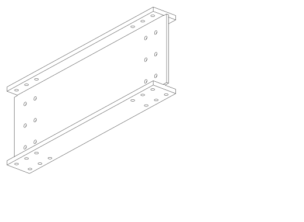
| depth | 180 |
| flange width | 60 |
| flange t | 10 |
| web t | 5 |
| length flange to flange | 468.5 |
| web overhang | 10.0 |
| pitch between nodes | 562.5 |
| bolt | 5/16-24 NAS6705 family |
All dimensions in mm.
Custom extrusion, 468.5 mm between flange ends, the web 10 mm longer at each end to bear in the node core slot. The node fork cheeks slide inside the section beside the web over the last 78 mm. 12 flange holes (two rows of three at 32 mm, rows 36 mm apart) and 6 web holes per end, 8.03 mm reamed for 5/16-24 A286 close-tolerance bolts. Inner-flange holes countersunk at the seat face (z 180).
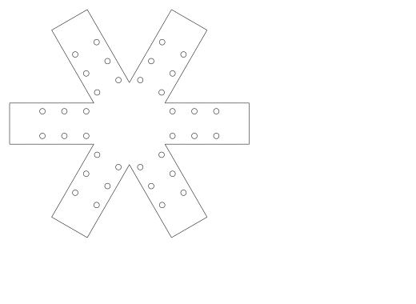
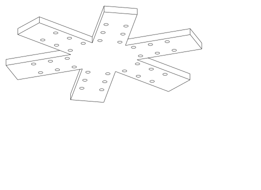
| arms | 6 |
| arm width | 60 |
| arm reach from centre | 175.0 |
| thickness | 12.0 |
| holes per arm | 6 |
| hole | 8.03 |
All dimensions in mm.
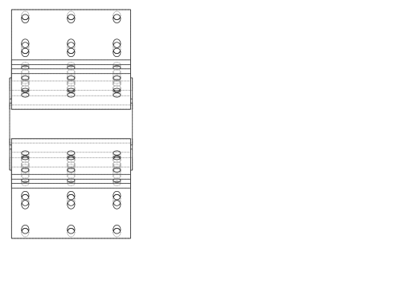
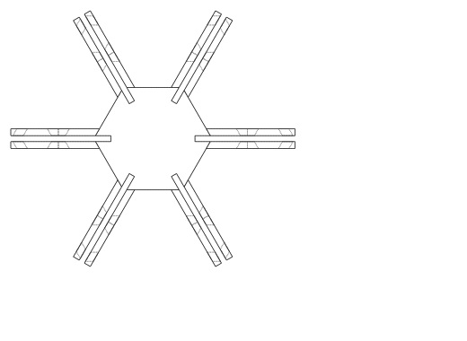
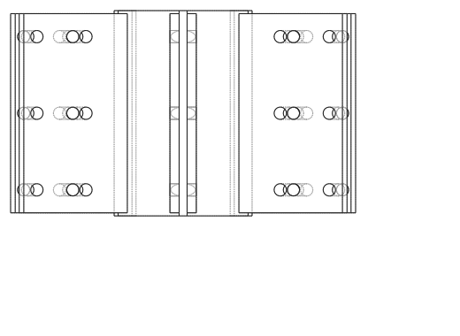
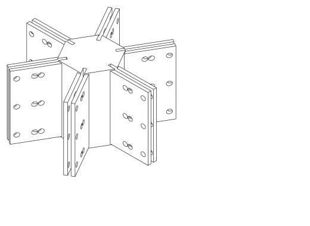
| core across flats | 90.0 |
| fork length | 90.0 |
| cheek t | 6.0 |
| slot | 5.2 |
| height | 134.0 |
| holes per fork | 6 |
| hole | 8.03 |
All dimensions in mm.
Machined hexagonal core 90 mm across flats with six forks: 6 mm cheeks 90 mm long, 134 mm tall, with a 5.2 mm slot for the rib web. The cheeks sit inside the rib section between its flanges. 6 holes per fork, two columns of three, through both cheeks (double shear).
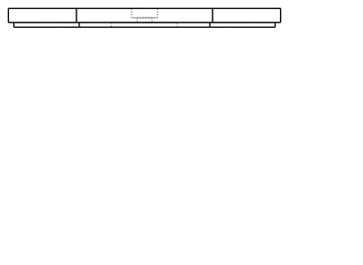
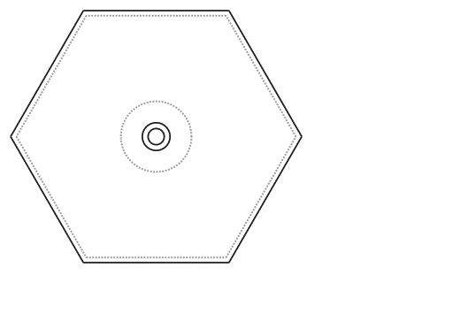
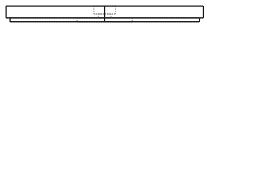
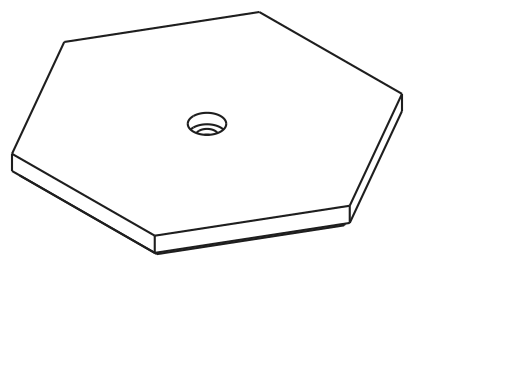
| across flats | 100 |
| thickness | 6 |
| pad | 2 |
| screw | M6 x 40, A286, into the node core |
| one per | six-way node (18 per hexagon) plus the main rib and frame nodes |
All dimensions in mm.
Holds the corners of the six pressure panes that meet at a node: a hexagonal plate 100 mm across flats, 6 mm thick, with a 2 mm elastomer pad and one M6 screw down through the inner flange and the star plate into the node core. Carries the pane's own weight on the ground, launch inertia and the seal seating force; never the pressure, which pushes the pane onto the flange. PROPOSAL, 2 Nov.
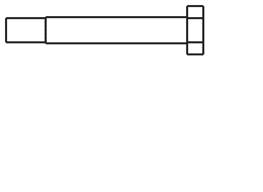
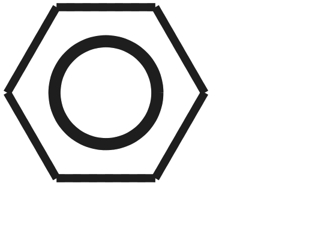
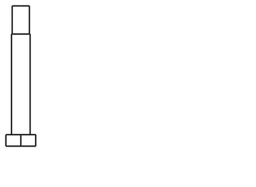
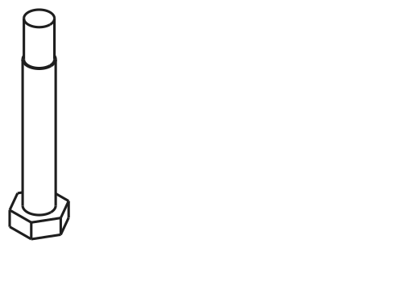
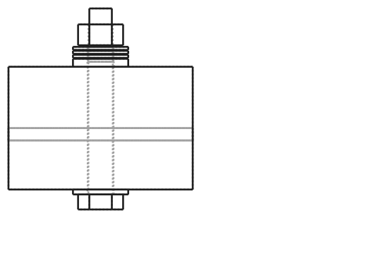
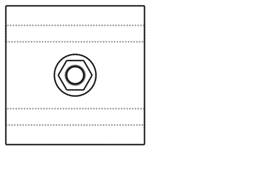
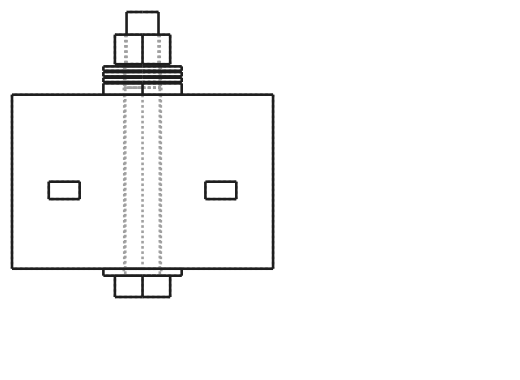
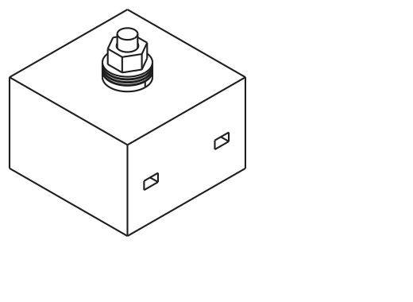
| bolt | 5/16-24 A286 NAS6705, U, grip about 48.6 mm (NAS6705U33 or nearest) |
| webs | 2 x 20 mm 6061 |
| washers | 2 x 1.6 mm |
| spring stack | 4 Belleville discs in series, about 2.5 kN/mm |
| preload kN | 2.75 |
| stack deflection mm | 1.1 |
| nut | self-locking, NASA-STD-5020B |
All dimensions in mm.
The proposal of the 2 Nov seam bolt study: the NAS6705 bolt through the two 20 mm frame webs and two washers, with four Belleville discs (Inconel X-750, about 2.5 kN per mm as a stack) under a self-locking nut. The preload of 2.75 kN is set by the stack height, 1.10 mm of deflection, with a go/no-go gauge. The grooves in the lower web are the two butyl cord grooves. Mass is the metal in this 60 mm patch only.
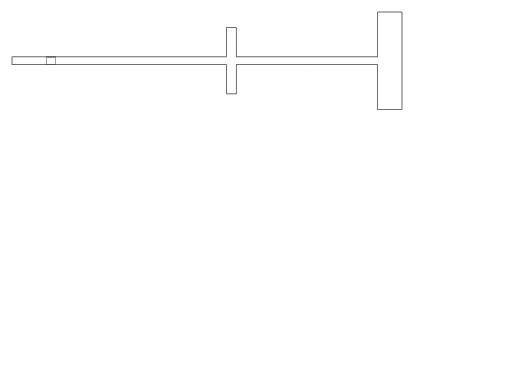
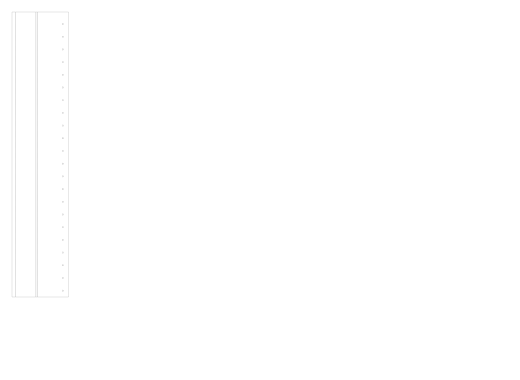
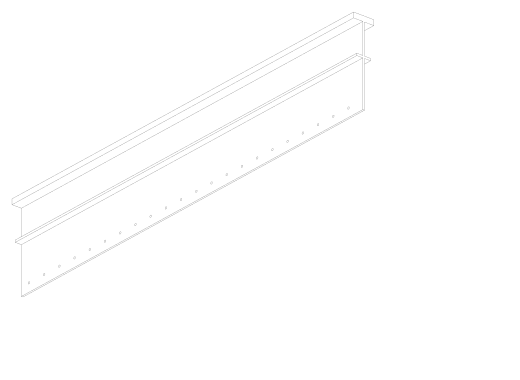
| depth | 400.0 |
| flange width | 100.0 |
| flange t | 25.0 |
| web t | 8.0 |
| ledge reach | 30.0 |
| ledge t | 10.0 |
| seat plane | 180.0 |
| cap bolt | 3/8-24 A286 at 90 mm |
| length | 2020.0 |
All dimensions in mm.
Outer flange 100 x 25, web 8, seat ledges 30 mm each side at the seat plane z 170-180. The inner flange is the two bolted angles P-04A. 3/8-24 cap bolt holes through the web at 90 mm pitch, 40 mm below the cabin face. Length 2020 mm between hub and corner block (schematic ends).
Source: Rev E restack (24 Oct), rib study (2 Nov)
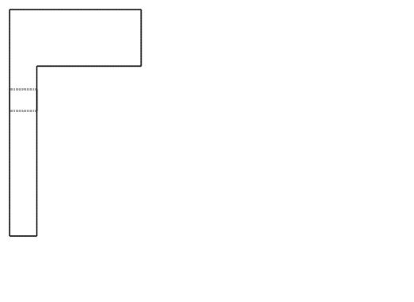
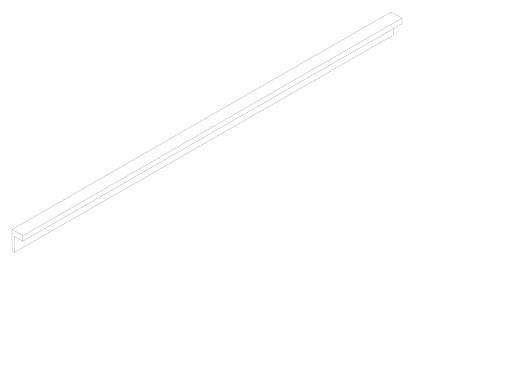
| horizontal leg | 46 |
| flange t | 25 |
| vertical leg | 100 |
| vertical t | 12 |
| length | 2020.0 |
All dimensions in mm.
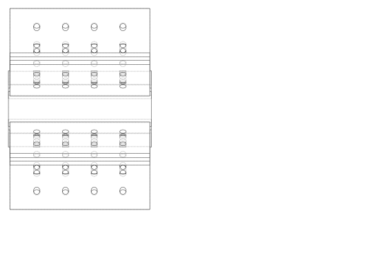
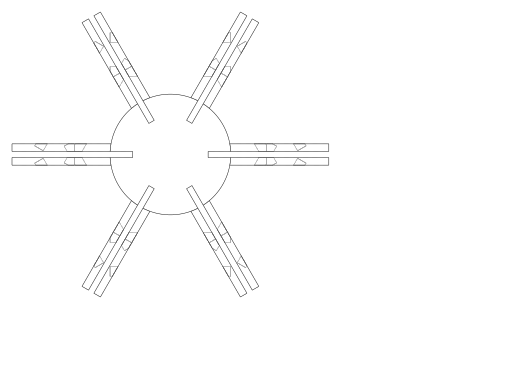
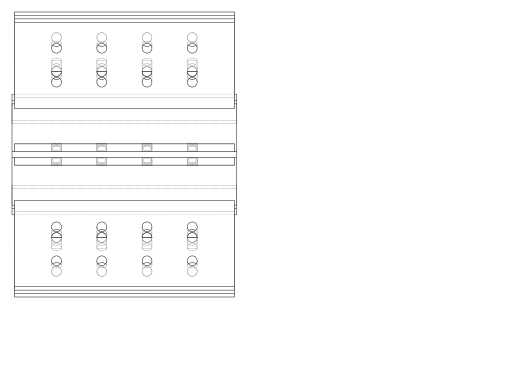
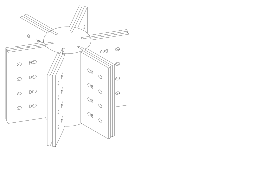
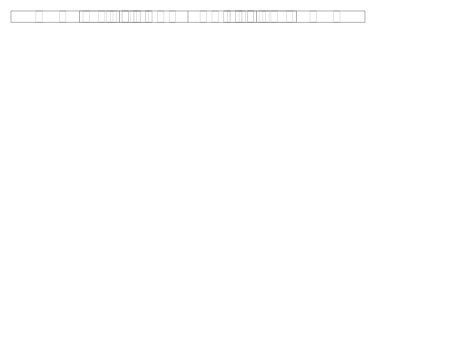
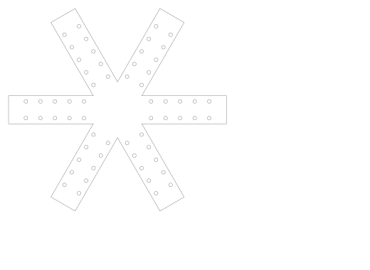
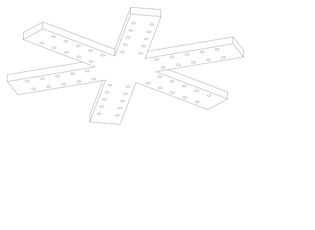
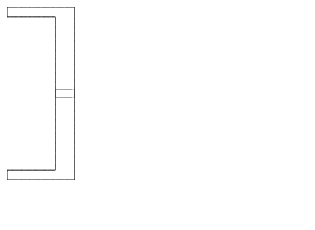
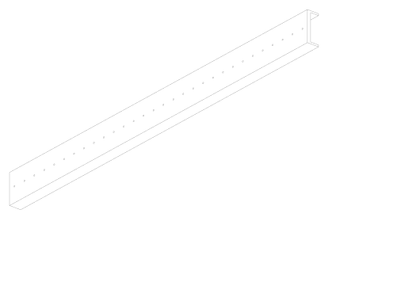
| depth | 180.0 |
| web t | 20.0 |
| flange | 50.0 x 10.0 |
| lip | 50.0 x 10.0 |
| seam bolt pitch | 75 |
| length | 2250.0 |
All dimensions in mm.
Web 20, outer flange 50 x 10 and seat lip 50 x 10 at z 170-180 (moved to the cabin face for the restack). Seam bolt holes 8.03 mm at 75 mm pitch at mid-depth (two per 150 mm D1 slice). Straight schematic: the real member's web leans 20.9 degrees to the joint plane.
Source: Rev E sizing (24 Oct)
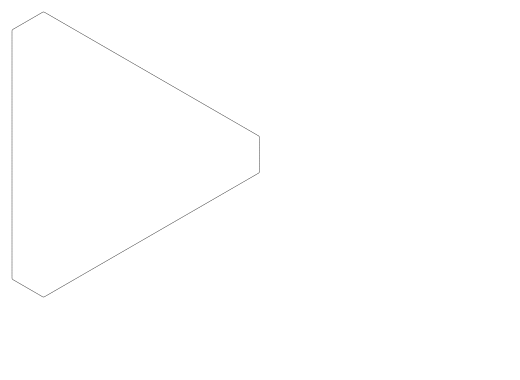
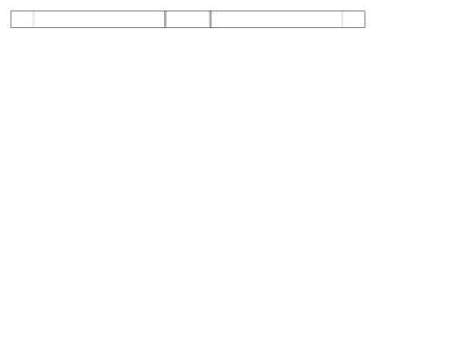
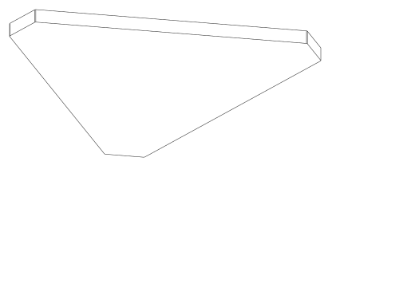
| side | 531.0 |
| thickness | 22.0 |
| corner cut | 60.0 |
| bite on 60mm flange | 20.9 |
All dimensions in mm.
Equilateral 531 mm (k 4 cut, 9.09 mm short of each rib centre line). Corners truncated 60 mm for the node star plates and clamp screws. Edges ground and polished, 1 mm chamfers. Rests on the cabin face of the secondary rib inner flanges; pressure seats it.
Source: Rev E restack (24 Oct), rib study (2 Nov)
How the secondary ribs meet. The web tongues sit in the forks of the core; the star plates splice all six flanges at once, the outer one on the space side and the inner one inside the section under the seat flange. 18 bolts per rib end, 5/16-24 A286 close tolerance in reamed holes. See the note 'Rib joints (2 Nov)'.
One of the 20 glass hexagons, Rev E restack with the thin ribs proposed on 2 November. The panes rest on the cabin face of the secondary rib inner flanges at z 180. The frame is drawn straight; the real web leans 20.9 degrees to the joint plane. Corner blocks and mid-seam hardpoints are not in this model yet.
STEP assembly (40 MB) is in Drive, UPDATES / Week 09 / parts library GLB
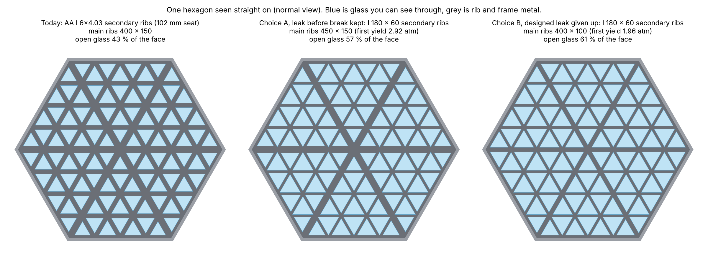
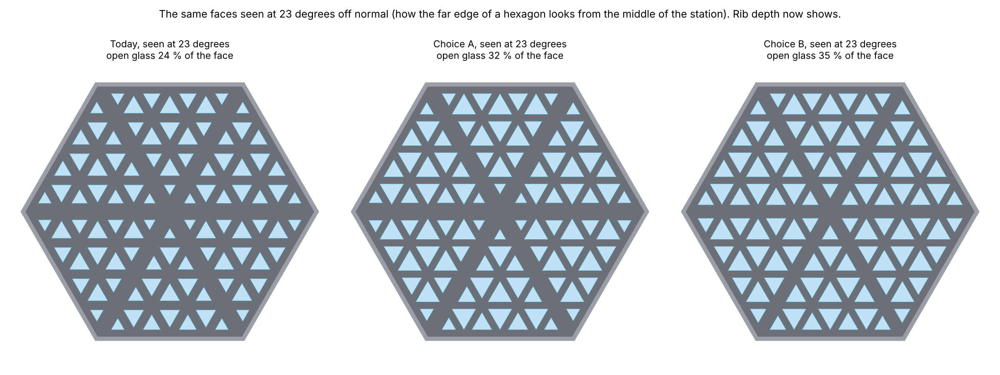
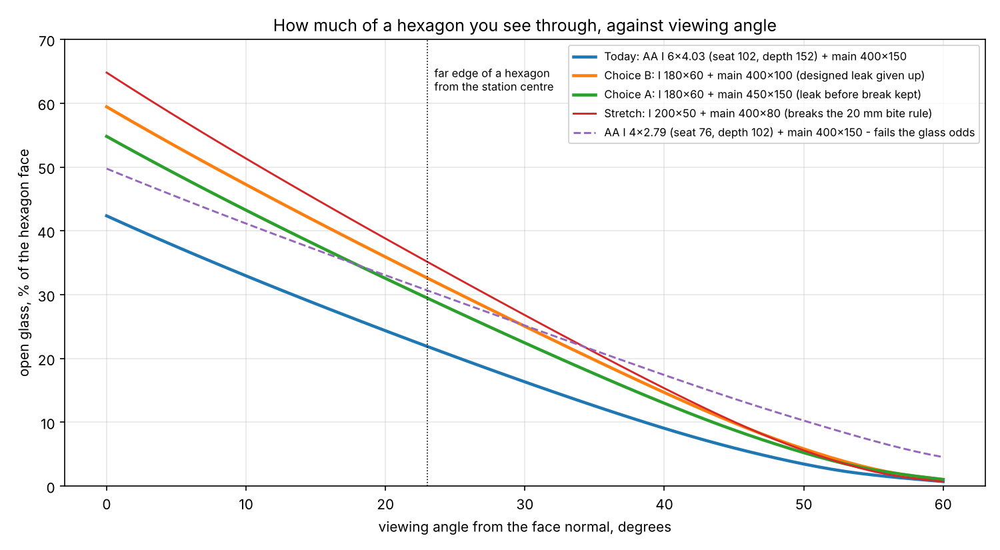
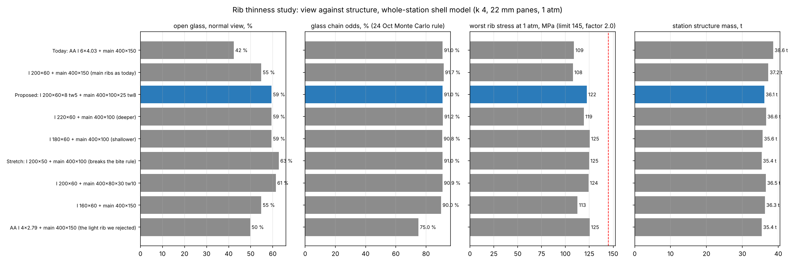
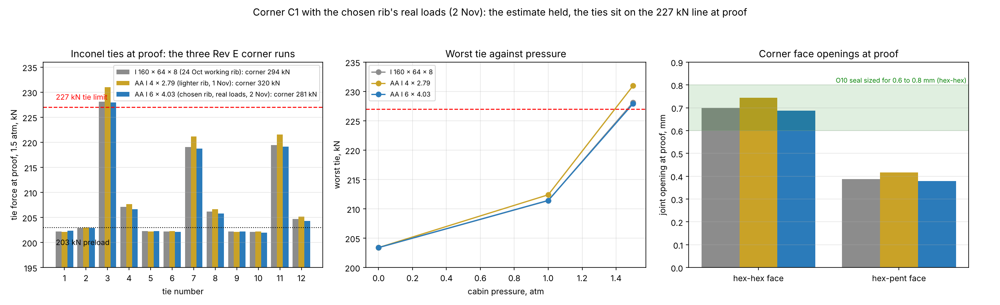
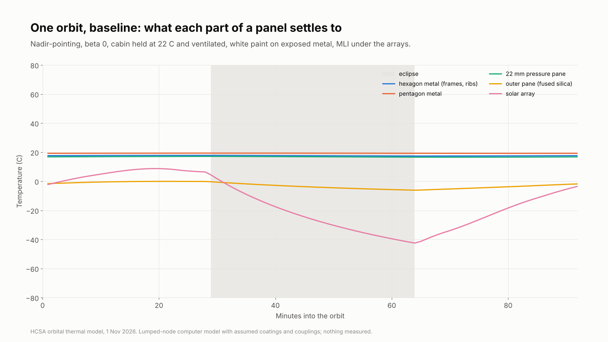
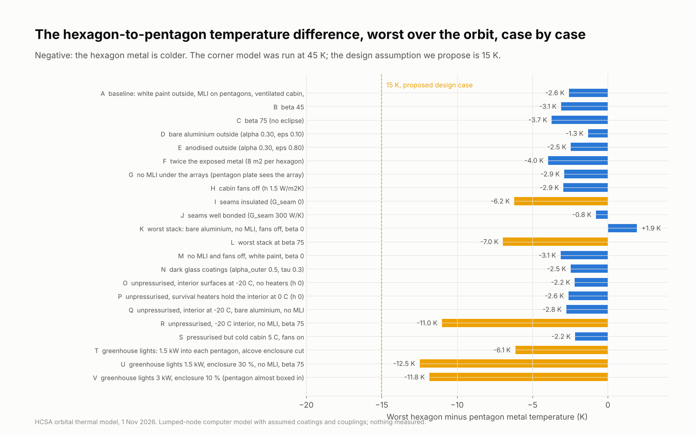
The notes behind them are in the project: How thin the ribs can go (2 Nov), Correction (2 Nov), Corner C1 with the chosen rib's real loads (2 Nov), Orbital thermal model (1 Nov).